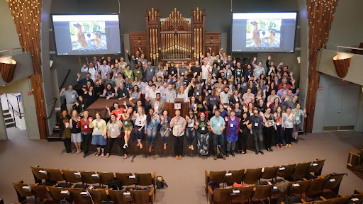

About csv,conf

The Call for Proposals is now open!
Use the button below to submit a talk. Applications are accepted until March 23.
What is csv,conf?
csv,conf is a community event for data makers from all around the world. At csv,conf, we get together to discuss open data, and how data can be used to solve problems across open source, journalism, science, government, and beyond! Over two days, attendees will have the opportunity to learn about ongoing work, share skills, exchange ideas (and stickers!) and kickstart collaborations. The rest of the week will be dedicated to parallel events featuring open data and open scholarship initiatives, communities, and projects. csv,conf isn't a typical tech conference with corporate-sponsored talks; it is a community conference where everyone is welcome to learn from each other. We welcome you to join us for the 9th year! Registration & call for proposals will open soon.
Who is csv,conf for?
csv,conf is a welcoming data-centric conference that is for anyone! We focus on stories about the people that work with data, and how their projects impact the world. Past participants have included climate scientists, local government officials, data hobbyists, open source contributors, academics, and more! You can watch previous talks on our YouTube channel.
What is the theme for csv,conf,v9?
"Data for Communities": “Data for Communities” means recognizing that data doesn’t just belong in servers or spreadsheets; it belongs in the hands of people working to improve their neighborhoods, social services, educational resources, and policy decisions. It’s about exploring how community groups, civic organizations, and local advocates can use open data to identify pressing issues, build trust through transparency, and create lasting, positive change. At csv,conf,v9, we will have sessions where researchers and practitioners discuss the latest tools for crowdsourced data collection, city planners showcase open datasets that have guided equitable infrastructure projects, and educators share insights on how to integrate data literacy into underserved communities.
Where will csv,conf be located?
csv,conf,v9 will be located in Bologna, Italy.